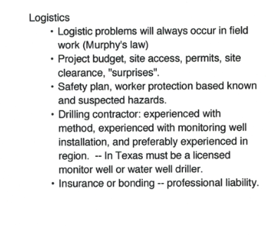
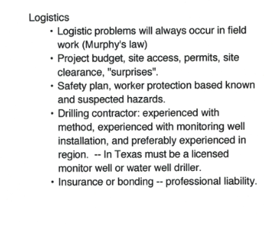
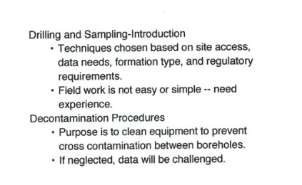
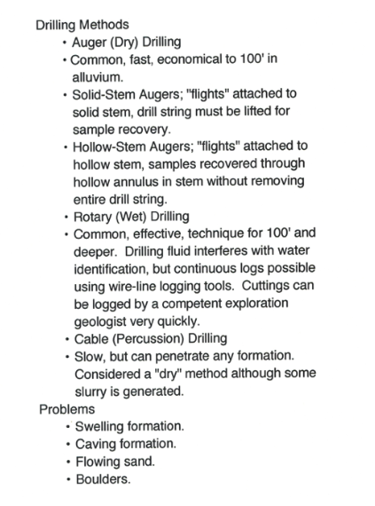
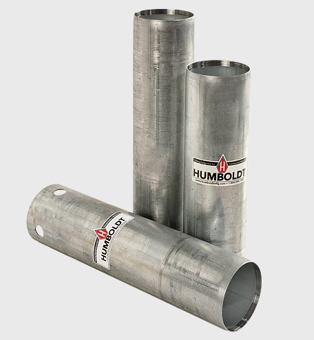
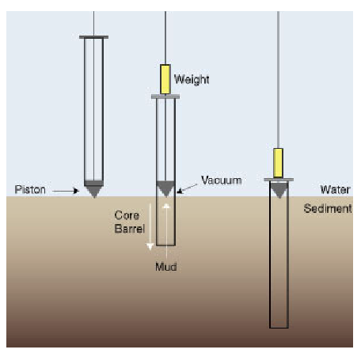
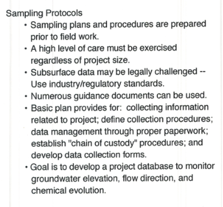
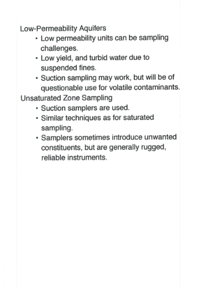
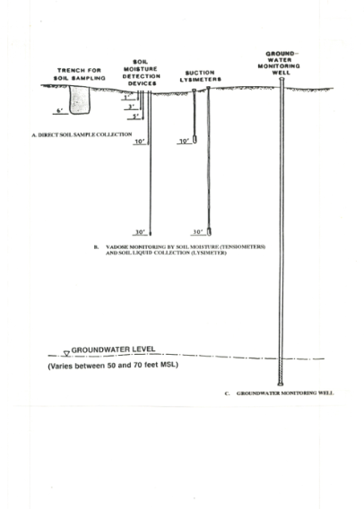

Site Characterization#
Tip
The textbook (pp. 113-158) has a decent description of how to perform an overall site investigation.
In the previous lesson on site mapping, we examined how to determine and map the extent of contamination, focusing on delineating plume boundaries and identifying zones of concern. With that foundation in place, we now turn to the physical characteristics of the aquifer itself. Understanding these hydraulic properties is essential for predicting how contaminants will migrate and for selecting effective remediation strategies.
Site Investigations#
The textbook (pp. 113-158) has a decent description of how to perform a site investigation.
A short background follows:
Readings#
Bouwer, H. and R.C. Rice, 1976. A slug test method for determining hydraulic conductivity of unconfined aquifers with completely or partially penetrating wells, Water Resources Research, vol. 12, no. 3, pp. 423-428.
Hydrogeologic Frameworks#
The Unsaturated (Vadose) Zone#
The unsaturated, or vadose, zone is a vital component of the Earth’s subsurface that plays a pivotal role in the quality of groundwater resources. Situated above the saturated zone, where groundwater is found, the unsaturated zone acts as a barrier that contaminants must traverse before reaching the underlying aquifers.
Characteristics of the Unsaturated Zone:
Overlying the Saturated Zone The unsaturated zone is the region that overlies the saturated zone, which contains groundwater. It acts as the initial layer of defense against potential contamination, as any substances entering the unsaturated zone must pass through it before they can reach the underlying aquifers.
Contaminant Migration Contaminants introduced into the environment almost invariably encounter the unsaturated zone on their journey to the aquifers. This zone is the first line of defense against pollutants, as it often serves as a natural filter, removing or attenuating contaminants before they can impact the groundwater.
Fluid Movement Fluid movement within the unsaturated zone is governed by a complex interplay of physical forces, including surface tension, capillarity, and gravity. These forces influence the direction and rate at which water and other fluids move through the unsaturated zone. Surface tension and capillarity can draw water upward against the force of gravity, creating a dynamic and intricate flow regime.
Non-Homogeneous Nature The unsaturated zone is non-homogeneous, meaning it lacks uniformity in terms of soil and rock properties. This heterogeneity can make accurate description of the geologic makeup a challenging task. To understand the composition and structure of the unsaturated zone, extensive subsurface investigations are often required, involving techniques such as borehole drilling, soil sampling, and geophysical surveys.
Processes Governing Flow in the Unsaturated Zone:
Several critical processes influence the flow of fluids within the unsaturated zone, ultimately determining its effectiveness as a protective barrier for groundwater. These processes include:
Hysteresis: Hysteresis describes the phenomenon where the wetting and drying paths of the unsaturated zone do not coincide. The relationship between moisture content and pressure or suction varies depending on whether the unsaturated zone is drying out or becoming wetter. Understanding hysteresis is essential for accurate modeling and prediction of fluid flow in this region.
Macropore Flow: Macropores are relatively large openings in the subsurface, such as fractures, root channels, and wormholes, that allow for rapid flow of water and contaminants. Macropore flow can significantly influence the movement of water and contaminants in the unsaturated zone, often bypassing the slower matrix flow and presenting challenges in contamination remediation.
Capillary Movement: Capillary action is the phenomenon responsible for water’s ability to move upward in narrow soil pores against the force of gravity. Capillarity is a critical mechanism in the unsaturated zone that influences moisture distribution, particularly in fine-textured soils, and can facilitate the transport of contaminants.
Darcian Flow: the slow, matrix flow of fluids through the unsaturated zone. It occurs when water moves through the interconnected pores and fractures within the soil and rock. This process can filter and attenuate contaminants, making it a key mechanism in protecting aquifers.
The Saturated (Aquifer) Zone#
Underlying the unsaturated (vadose) zone, where water, air, and contaminants navigate, the saturated zone pore space is completely filled with water.
Characteristics of the Saturated Zone:
Complete Saturation: The most defining characteristic of the saturated zone is its complete saturation with water. Unlike the unsaturated zone, which allows for the presence of both air and water, this realm beneath the surface is fully immersed in water. Consequently, it is the reservoir for groundwater storage.
Geologic Environments of the Saturated Zone:
The saturated zone can be encountered in various geologic settings, each with its unique attributes and groundwater potential. These environments include:
Igneous-Metamorphic Systems: In igneous and metamorphic rock environments, the saturated zone is often less abundant. These rocks are typically dry and do not yield significant amounts of groundwater. Flow within these systems primarily occurs in fractures, and in some cases, it may be substantial, contributing to localized groundwater resources.
Sedimentary Systems: Sedimentary environments, comprising sediments and limestones, are more conducive to groundwater abundance compared to igneous-metamorphic systems. In these settings, groundwater typically flows between the grains and voids of the sedimentary layers, with fractures also playing a role in certain cases. The relatively permeable nature of sedimentary rocks allows for the movement and storage of substantial groundwater resources.
Alluvial-Fluvial Systems: Alluvial and fluvial systems represent an abundant source of groundwater. These systems are characterized by the deposition of sediments carried by fluvial processes in shallow or deep basins. Groundwater is plentiful in these environments, with most systems comprised of clay and sand beds. The geometry of interbedding within these systems influences the behavior of groundwater flow, making it a dynamic and complex setting for hydrogeological investigations.
Flow Behavior in the Saturated Zone:
The flow dynamics within the saturated zone are influenced by the specific geologic environment in which it is found:
Fracture Flow: In igneous-metamorphic systems, fracture flow is a significant factor. Water flows primarily through fractures and faults in the rock, which act as conduits for groundwater movement. The effectiveness of fracture flow in these systems depends on the density and connectivity of fractures.
Intergranular Flow: Sedimentary systems exhibit intergranular flow, where water moves between the grains and voids of the sedimentary layers. This flow mechanism allows for the storage and movement of groundwater within the porous sedimentary rock.
Alluvial-Fluvial Influences: Alluvial and fluvial systems present unique flow dynamics. The abundance of groundwater in these systems is influenced by the composition and geometry of the interbedding of clay and sand beds. The interaction of fluvial processes and sediment deposition plays a crucial role in groundwater availability and movement in these environments.
Groundwater Motion#
Discharge is proportional to driving energy (hydraulic gradient) cross sectional area (A), and ease of conductance (hydraulic conductivity, K) formally represented by Darcy’s law
The interstitial (seepage) velocity is estimated as
where \(n\) is the porosity.
Transmissivity is the ability of an aquifer to transmit water through its entire thickness.
Concepts of Investigations#
Site investigation in hydrogeology is a critical step in understanding the complex interplay between geological features, groundwater flow, and potential contamination risks. The primary goal of such investigations is to collect comprehensive and accurate data to define the extent of contamination, allowing for the design of effective remediation strategies.
Defining the Extent of Contamination:
Site investigations serve as the foundation for delineating the extent of contamination within an area. Accurate data collection is vital to ensure that contamination plumes are well-defined, enabling the design of tailored and efficient remediation approaches. As the costs associated with remediation can be substantial, the need for precise information cannot be overstated.
The Role of Site Geology:
Site geology plays a pivotal role in forming the physical framework that governs the movement of groundwater and contaminants. The geological characteristics, such as the presence of aquifers, confining layers, and structural features, profoundly influence the flow pathways and dispersion of contaminants. Thus, a thorough understanding of site geology is essential for both contamination assessment and remediation design.
Scale and Specificity:
Site investigations in hydrogeology are fundamentally different from other hydrogeologic studies, such as regional water resource assessments. These investigations focus on small areas in intricate detail, rather than broad-scale assessments. In such cases, the devil is in the details, as small features can significantly impact groundwater flow and contamination migration.
Small-Scale Features of Significance:
Shallow Water Zones One of the primary objectives of site investigations is to identify shallow water zones that may not typically be used as water resources. These zones may be close to the surface and can be more susceptible to contamination, making their assessment vital for environmental protection.
Geological Study Site geological studies provide the foundation for understanding the subsurface characteristics. Strata a few inches thick, animal burrows, root holes, cracks, decayed piping, and foundation drains are all small features that can influence groundwater flow, making their detailed quantification crucial.
Field Strategy:
A strategic approach to site investigation involves combining traditional water resources quantification methods with a detailed focus on small-scale features. This strategy allows for a comprehensive assessment of the site, ensuring that both the broader hydrogeological context and the specific intricacies are taken into account. Traditional techniques might include hydrogeological testing and monitoring well installation, while the detailed assessment would encompass close examination and quantification of small-scale features that could impact groundwater flow and contamination movement.
Subsurface Exploration Concepts#
 


Drilling Boreholes#
 

Videos
Sampling Considerations#

Shelby-Tube Sample Probe

Split Spoon Sample Probe (Typ.)
Piston-Core Sample Probe



Monitoring Wells#


Cluster Wells


QA/QC Considerations#


 